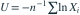

来自 ， 。对 ，统计量
。对 ，统计量
。对 ，统计量 
满足？- A无偏但不相合
- B无偏且方差为 1/n
- C无偏且达到估计该参数函数的 C-R 下界
- D有偏但相合
我已思考，展开答案与解析
正确答案：C
- 的均值、方差分别为 、，因此 ，。
- 样本信息量为 ，函数参数的下界为 。
易错提醒估计参数函数时 C-R 下界要乘导数平方。
JYSG · 432精选 · 册内复旦大学432·2023年·十二(2)；PDF第39页（印刷页37）
原大题拆解
。对 ，统计量 
满足？JYSG · 432精选 · 册内复旦大学432·2023年·十二(2)；PDF第39页（印刷页37）
原大题拆解